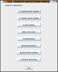

Choosing a generator
CaGe's dialogue windows operate similar to the "assistants" or "wizards" that you might know from other programs mostly found in the Windows world. In other words, CaGe will show you a sequence of dialogues each asking for a particular set of options, and there are buttons named "Next" and "Previous" that you can use to move on to the next dialogue or to go back and review your settings. Whereever you see the "Prevíous" and "Next" buttons, you can press them using the key combinations Alt+Left and Alt+Right (Left and Right being the arrow keys on your keyboard).
The first window presented by CaGe is simple -- it asks you which of a
number of predefined generators you want to use. Each of the generators
installed with CaGe is dedicated to its own graph class or molecule
type. If you would like to use a generator program not supplied with
CaGe you can do so by choosing the external generator
button in CaGe's first window, and providing a command line with any option
parameters there.
There is no "Next" button in the generator selection window, but each generator button is actually a "Next" button too, saving you one click. Keyboard users can select generators by pressing Alt+1, Alt+2 etc. for the generator buttons, numbered from top to bottom.
The generators we provide with CaGe are results of our team's mathematical research. They implement algorithms which generate certain classes of graphs completely and quickly -- so quickly that we don't store their results in files (which can become huge). If any post-processing or analysis is to be done later on a certain result set, we simply rerun the generator to generate the set again and pipe the generator's output into the post-processing or analyzing program. CaGe supports this process too. It is possible to provide a command line for an external program to receive a generator's output. If this external program produces analysis or logging output on standard error and passes on "interesting" or possibly modified graphs to standard output, CaGe can use and visualize your results. This external program can be specified in the "filter" text field of the output options window.
The next pages describe the generators we have built into our distribution of CaGe. As mentioned before, you can use your own generators if you choose external generator in the first window.
